The same question as a centred card: Everything first and already chosen.
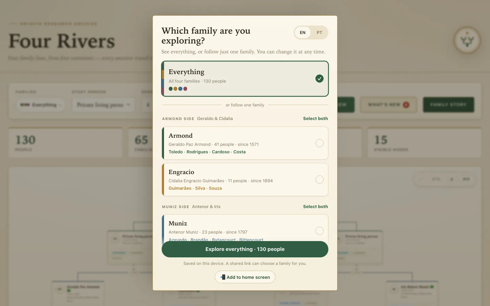
The same help on a computer: the layout, and the install steps for iPhone and Android.
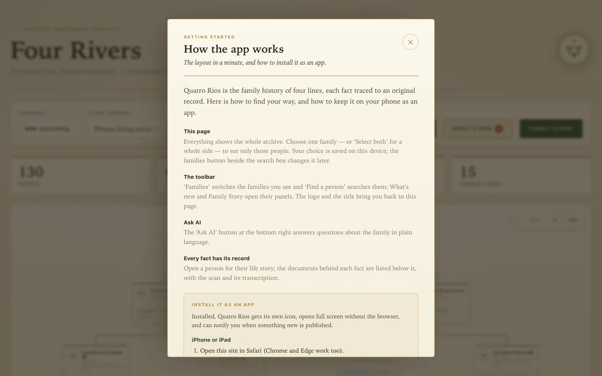
The full tree from the archive's owner. “Families” is the first toolbar control; What's new shows its unread count.
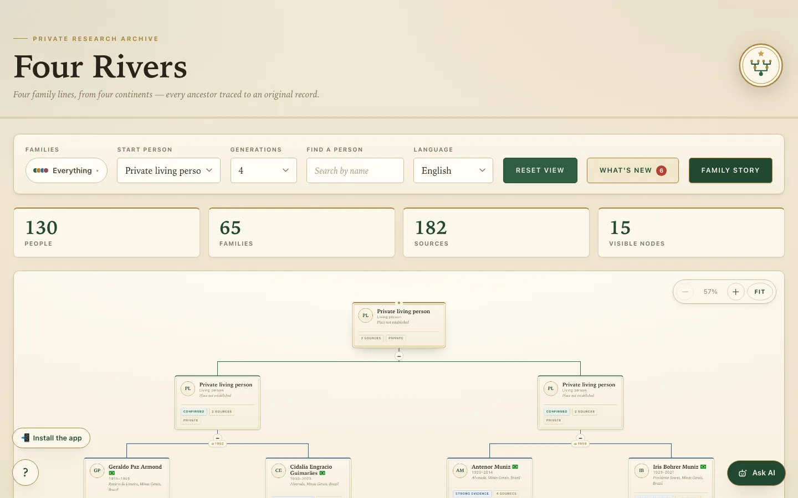
With Bohrer chosen, the tree starts at that grandparent (Iris) and search is scoped to it.
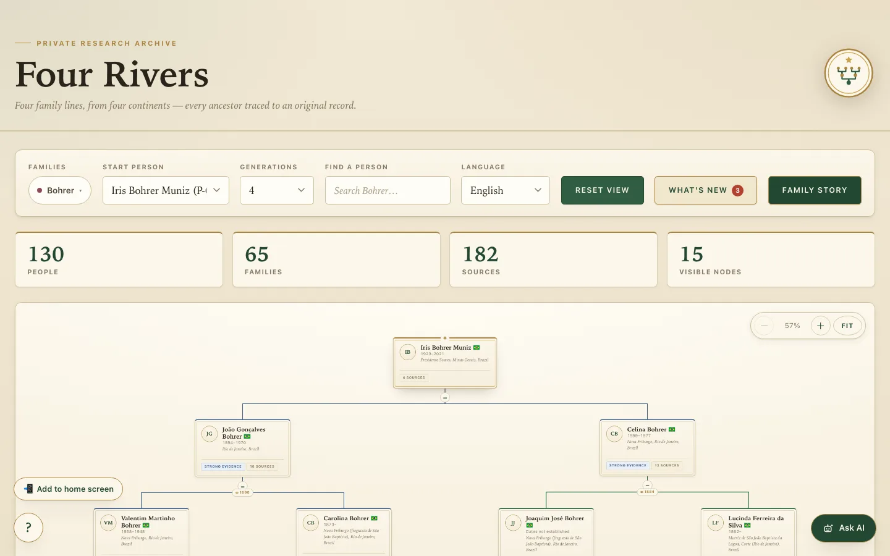
Switch families or go back to Everything, and share a link that opens on them.
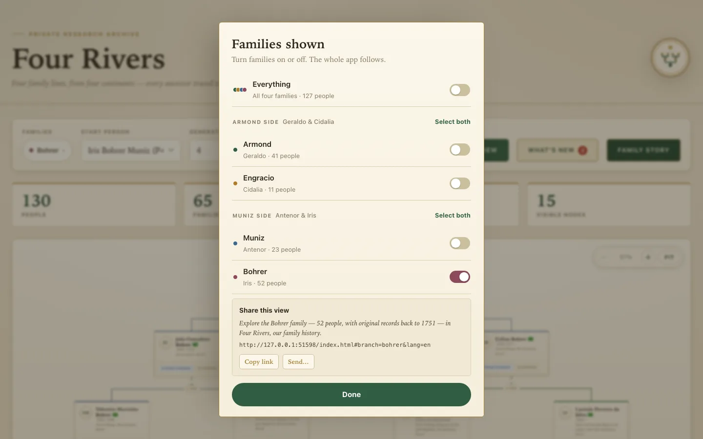
The same switch as on the phone, with family tags on each result.
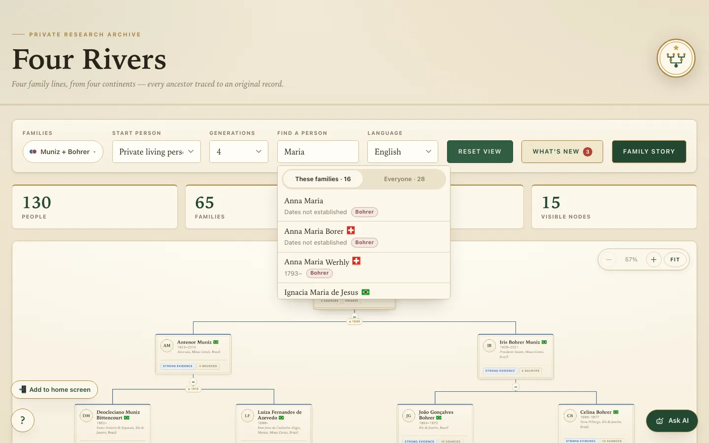
The family tag sits by the dates; the relationship reads “to the archive's owner”. On desktop the robot button stays — there is no bottom bar.
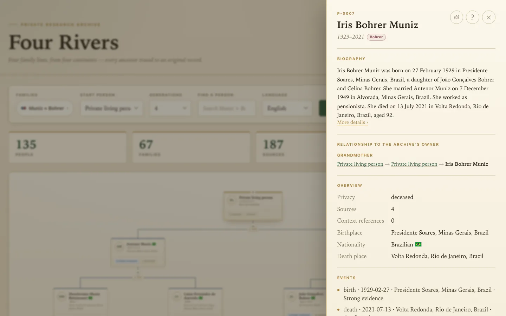
Filtered to the chosen families, with NEW marks and family tags.
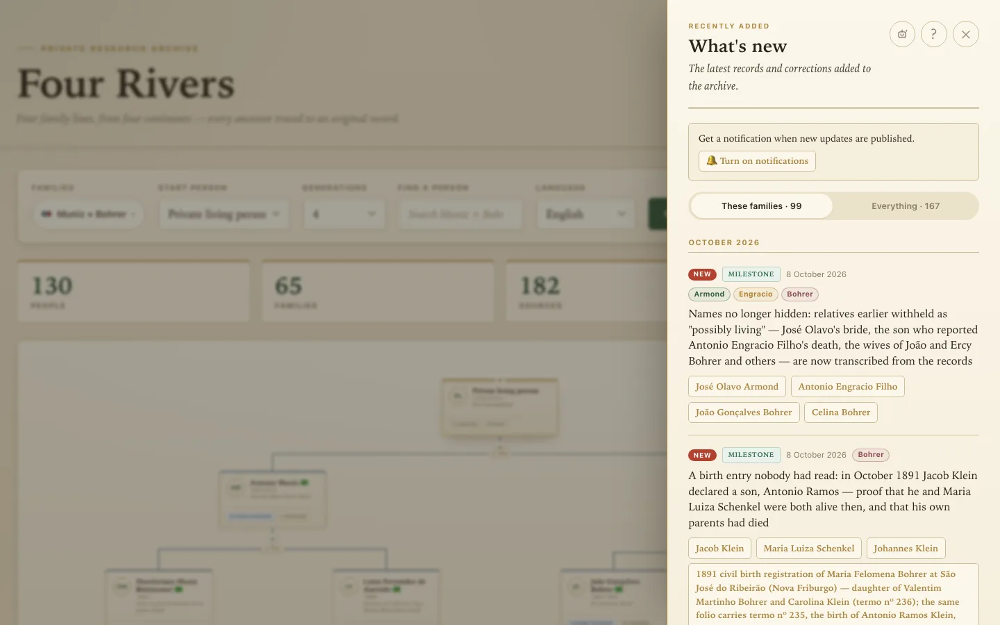
The chosen rivers first, with the original order one click away.
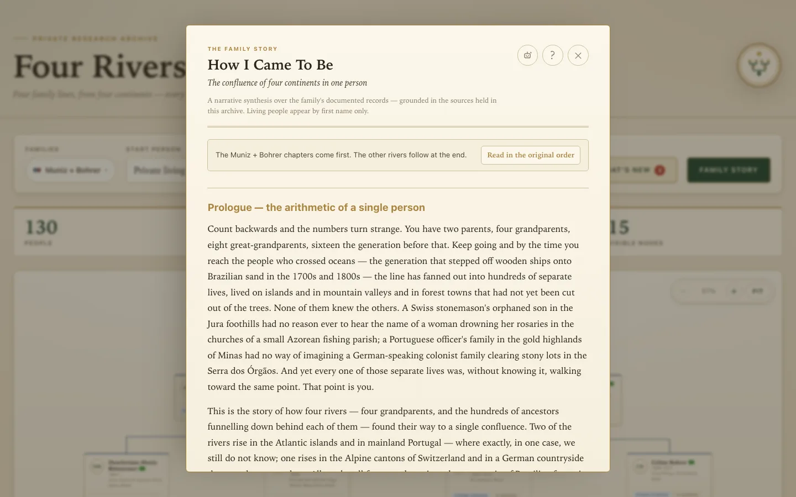
Opened from a person's panel, the assistant suggests questions about them.
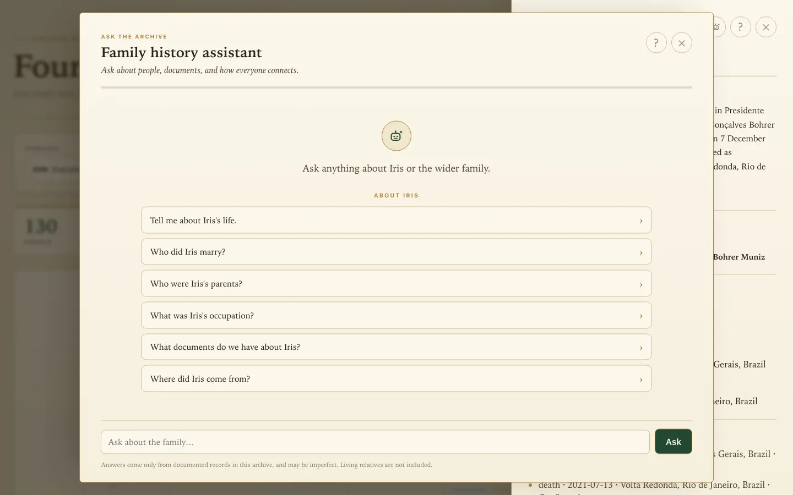
The guide now begins with “Choose your families”.
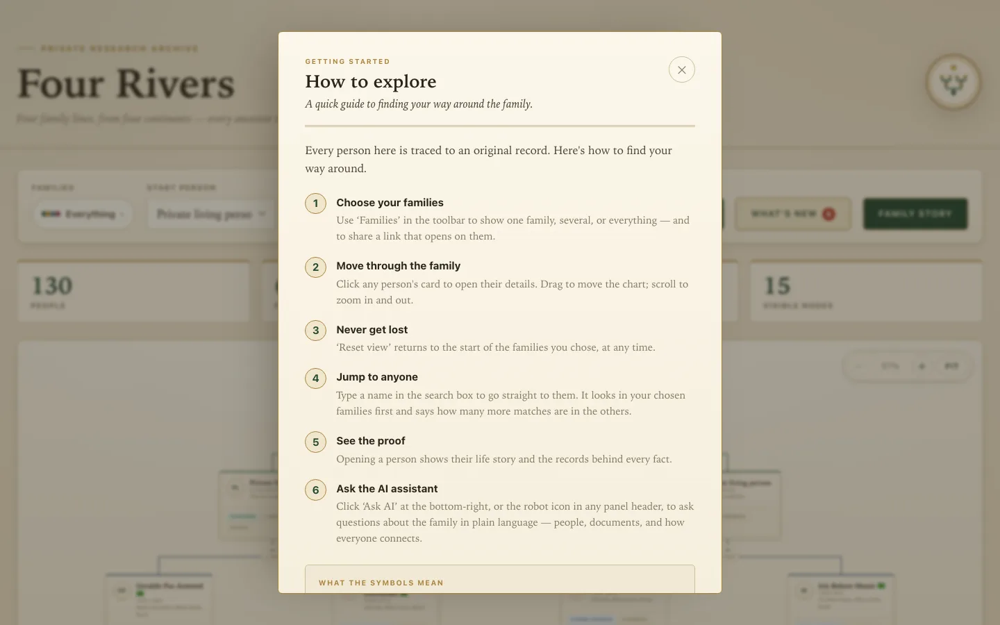